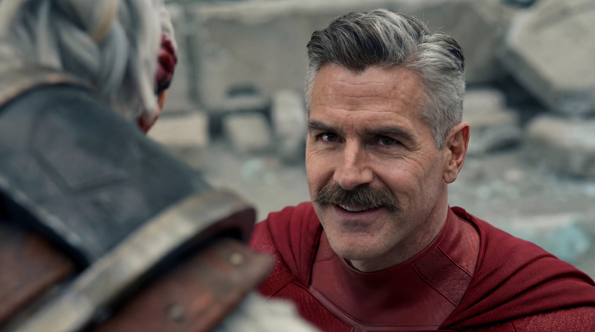

Tartalomgyártás
Figyelmet nem kérünk.
Figyelmet nem kérünk.
Tervezünk.
YouTube thumbnailök, social kreatívok és kampányvizuálok, amelyek nem külön képként működnek, hanem egy átgondolt online jelenlét részeként.
YouTube thumbnail
A kattintás az első döntés.
Egy thumbnail másodpercek alatt dönti el, hogy valaki tovább görget-e vagy rákattint. A kép, a tipográfia és a fókusz együtt kell, hogy egyetlen irányba mutasson.

Social media
Néhány másodperc alatt kell megállítani a görgetést.
Instagram, Facebook, TikTok — minden felület más ritmusban működik. A kreatív csak akkor dolgozik, ha illeszkedik ahhoz a helyzethez, ahol megjelenik.

Videós tartalom
A mozgóképhez is kell fókusz és ritmus.
Intro vizuálok, feliratok, grafikai elemek, képi utómunka — minden, ami a nyers felvételből kész, nézhető tartalmat csinál.

Kampányok
Nem posztokat gyártok.
Nem posztokat gyártok.
Vizuális döntéseket hozok.
Egy kampány akkor működik, ha minden eleme — a hirdetéstől a coverig, a posztól a bannereig — ugyanazt az irányt képviseli.